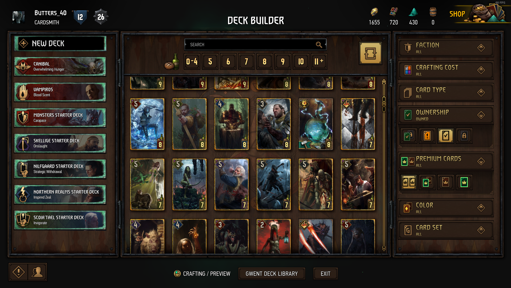

Gwent: O Jogo de cartas do Witcher
Gwent começou como um mini game de Witcher 3, era um simples jogo de cartas onde quem tivesse a soma das cartas mais poderosas na mesa, vencia o turno, o jogador que tivesse vencesse 2 turnos, ganhava a partida. Era uma lógica simples, mas que precisava de muita estratégia. O mini game era tão divertido que os jogadores passavam horas procurando cartas e desafiando NPCs para jogar algumas partidas. Os modders chegaram inclusive a criar um mod que tornava todas as batalhas do jogo em partidas de Gwent.
Não demorou muito para que os fans começassem a pedir para que a CD Projekt Red (desenvolvedora da série Witcher) criasse uma versão stand alone do mini game com multiplayer, afinal de contas, NPCs acabam se tornando previsíveis e deixam logo de ser um desafio.
A desenvolvedora gostou da ideia e começou a produção do jogo, que passou por 3 anos em desenvolvimento e teve um longo período de beta test. A versão stand alone passou por várias alterações para que ficasse mais balanceada e diversificada para o modo multiplayer. Veja o trailer:
Por se tratar de um jogo de cartas, Gwent ocupa uma posição única no mundo de Witcher, ele é capaz de trazer ao jogo personagens que participam da timeline dos jogos, dos livros (eventos que ocorrem antes dos jogos) e até mesmo da série de TV. Isso é perfeito pois o jogo consegue um nível de familiaridade com os fans da franquia que a acompanham por qualquer meio.
Você pode montar seu deck baseado em 6 facções diferentes, são elas; Northern Realms, Skellige, Nilfgaard, Scoia’tael Monsters e Syndicate. As facções não se misturam, você não poderá montar um deck que mistura por exemplo, cartas de monstros com cartas de Nilfgaard, cada facção terá suas características e cabe ao jogador experimentar e decidir qual combina mais com seu estilo de jogo. Algumas cartas são neutras, não pertecendo a nenhum dos grupos e, portanto, podem ser usadas em qualquer facção.
Além das cartas, as facções também possuem uma espécie de comandante com habilidades especiais que afetam o jogo. Essa habilidade pode ser escolhida no momento da criação do deck e a skin do comandante pode ser alterada sem afetar suas habilidades.
No mini game de Witcher as facções eram bem mais simples e tinham uma estratégia mais óbvia, ao enfrentar um deck de monstros por exemplo, já era esperado que inimigo enchesse o campo de batalha com muitas criaturas, porém, elas seriam fracas, a vitória seria na grande quantidade.
Um deck de monstros hoje pode ter várias estratégias, quem gosta de vencer pelo número, pode ainda usar cartas que se multiplicam, mas, é possível também, por exemplo, montar um deck de vampiros que suga a força das unidades inimigas ou um deck canibal, que se fortalece sacrificando suas próprias criaturas. Essa diversidade de estratégias para todas as facções tornam o jogo ainda mais interessante que o mini game original.
Gwent possui dois modos de jogo, o padrão, onde você joga com as regras normais do jogo e um modo especial que muda as regras a cada temporada, esse modo especial muitas vezes te força a criar decks diferenciados para se adaptar as novas regras, o que torna o processo de criação de decks ainda mais divertido e interessante.
As partidas são balanceadas pelo nível de habilidade do jogador, jogadores mais experientes e com decks mais poderosos não irão enfrentar iniciantes, desta forma, o jogo não se torna frustrante para quem ainda está aprendendo como tudo funciona.
O jogo é grátis para se jogar e possui vários meios para arrecadar dinheiro, você pode por exemplo comprar “barris” (kegs) de cartas, que são como os “boosters” do gwent, onde você receberá algumas cartas aleatórias, você poderá escolher se quer que todas as cartas pertençam a uma facção especifica.
Existe também um esquema de “season pass”, onde você paga para ter recompensas extras pela sua progressão no jogo. Essas recompensas variam entre barris de cartas, skins de comandantes, campos de batalha, imagens de perfil, etc.
Para quem não quer pagar, o jogo também tem um sistema de progressão grátis, porém mais lento. Você recebera recompensas gratuitas por completar vários desafios, como subir sua posição no ranqueamento, completar conquistas, vencer partidas e até mesmo, simplesmente entrar no jogo. Praticamente tudo o que você faz te dá alguma recompensa.
O jogo possui várias moedas, são elas; keys (chaves), ores (minérios), scraps (restas de cartas rasgadas), meteorite poder (pó de meteorito) e kegs (barris). Todas podem ser adquiridas de maneira gratuita e cada uma tem sua função.
Os minérios são usados para comprar barris. Os barris, como já falamos, serve para conseguir novas cartas. Os restos de cartas podem ser adquiridos rasgando cartas repetidas (ou alguma carta que o jogador não tem interesse) e são usados para criar novas cartas a sua escolha. O pó de meteorito serve para tornar cartas comuns em cartas com uma animação 3D, efeito puramente estético. E por fim as chaves são usadas em sistema de progressão especial chamado de “Reward Book” (livro de recompensas).
O livro de recompensas te permite escolher sua progressão na facção de sua escolha, liberando skins especificas e também te recompensando com outras moedas, como minérios, barris e restos de cartas.
Gwent está disponível para PC através do GOG (plataforma de jogos da Cd Projekt Red) e recentemente foi disponibilizado para Steam.
O jogo é leve e deve rodar na grande maioria dos sistemas.
| Mínimo | Máximo | |
|---|---|---|
| CPU | Intel Celeron G1820 | AMD A4-7300 | Intel Core i3 6100 | AMD FX-6300 |
| Ram | 4 GB | 4 GB |
| GPU | Nvidia GeForce GT 730 | Radeon R7 240 | Nvidia GeForce GTX 660 | AMD Radeon R7 265 |
| VRam | 1024 MB | 2048 MB |
Veredito
Gwent é um jogo divertido e tenta te manter entretido com seu sistema de progressão e modos com regras variadas que vem a cada temporada. Apesar de ser um jogo de cartas, é possível conseguir cartas novas relativamente fácil em comparação com outros jogos e graças a isso, é uma opção barata para quem gosta do gênero.


Hardware

E-Sports